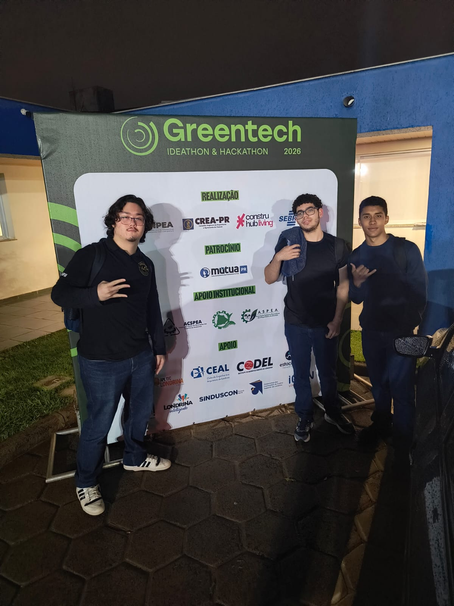
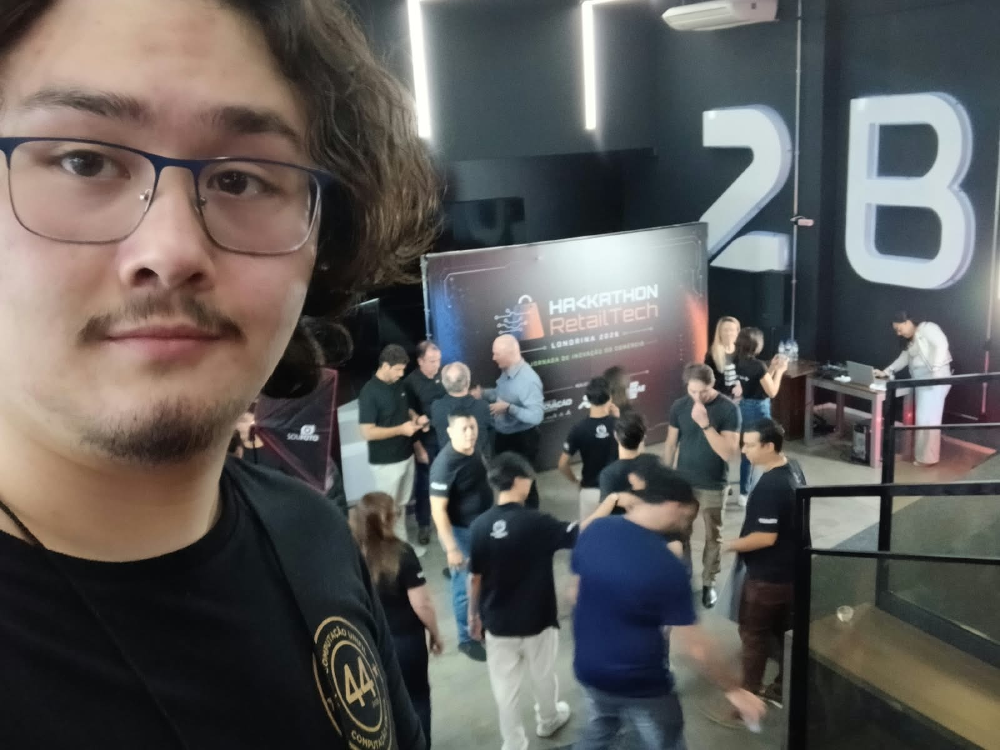

Alguns dos eventos de TI que participei
Ideathon Greentech
Apesar de não ter experiência e quase nenhum conhecimento em programação, me propus participar do Greentech. Foi uma experiência interessante e diferente, apesar de eu e minha equipe não termos passado pra fase de Hackaton.

Hackaton RetailTech
Ainda com pouco conhecimento e experiência, eu e mais dois colegas decidimos participar do Hackaton Retailtech. Diferentemente do Greentech, nós conseguimos avançar de fase, ainda que sem ter conquistado pódio. Foi uma experiência muito legal e de grande aprendizado.
